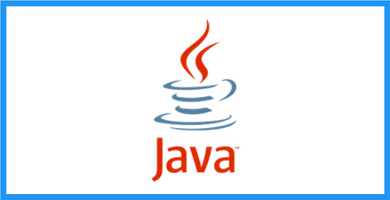

programa de estudio
- Lenguaje Java
- Introduccion a Spring Boot
- Gestion de Dependencias y Versionamiento
- Spring Boot MVC
- Clases de negocio
- Persistencia de Objetos
- Manejos de formularios

Objetivos de esta materia
Que los estudiantes Instalen las herramientas para desarrollo; Java JDK 19 - Spring Tool Suite Que puedan expresar las consignas de ejercicios en un formato de Historias de Usuario y la representen en Proyectos de GitHub Introducir en el manejo del lenguaje de programación Java: Creación de clases, atributos, métodos y estructuras de control selectivas Que puedan subir el desarrollo de ejercicios en el repositorio de GitHub